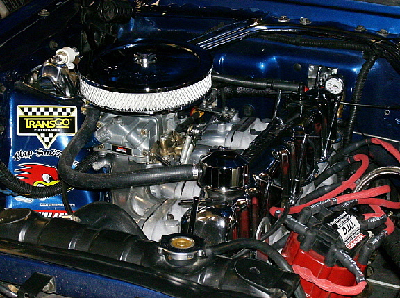
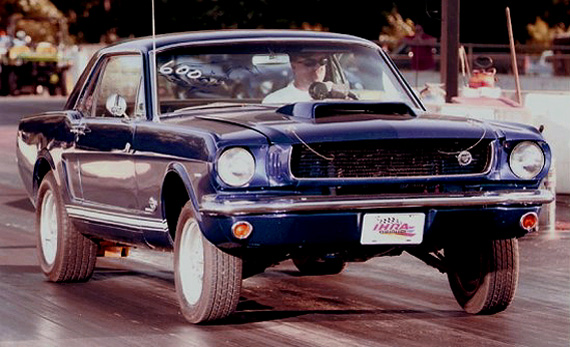
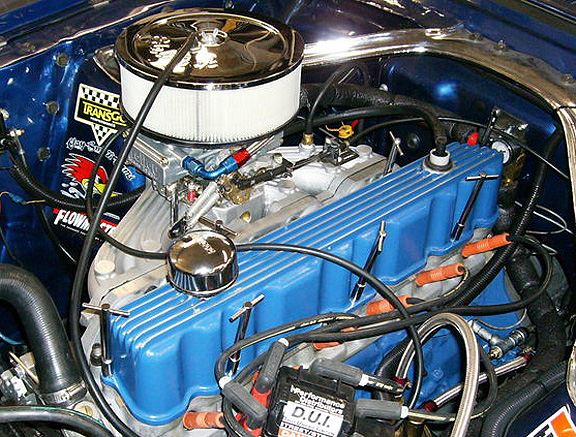

Well, this isn't a dyno result, but we felt we need to post this information as it is a good comparison of a naturally aspirated log head verses the new aluminum head. For those of you that are members of the FordSix forum, you probably know MustangGeezer as he is one of the original members. Doug was kind enough to help us test one of the new aluminum heads, comparing it to a highly reworked log head with a direct mounted Holley 500cfm 2V carb.

Doug is running a 200ci which is bored 60 over, a felpro head gasket, zero deck height, and flat top pistons. He's also using roller tipped rockers, DUI ignition, ARP studs & bolts, and a Holley 500cfm using 93 octane fuel. The aluminum cylinder head is straight out of the box, with no additional work done other than milling .012 to archive the targeted C/R (52-53cc chambers). The cam is a Classic Inlines (Clay Smith) 274H with a 110 lobe center. Static C/R is 10.23, with a Dynamic C/R of 8.38 (intake closes at 62* ABDC).
1/4 Mile Results |
Combination |
60" Time |
Best ET |
Best MPH |
Heavily Modified Log Head w/ 2V |
2.34 |
16.11
|
83.65
|
Aluminum Head w/ OZ 2V Intake
|
2.22 |
15.28 |
88.94 |
Aluminum Head w/ Alloy 4V Intake |
2.08 |
14.36 |
93.47 |
Note Carb Changes: Holley 500cfm-2V to Holley 600cfm |
Owner comments are noted below.
I'm doing a direct comparison between a hot rodded modified log head and the Classic Inlines aluminum head.
1978 big log head has been milled .080, has oversize SI valves (1.75" intakes 1.50" exhausts) 3 angle valve job, ported & polished, unshrouded valves, Clifford port divider, 1.6 ratio adj. rockers, and double valve springs. The log manifold was milled to accept a direct mount 500 cfm Holley 2V carb. A note of interest, I have almost $700 tied up in the log head in the various modifications.
The new
Classic Inlines aluminum head was untouched, except I gasket matched the exhaust ports. I did nothing else to the head except have it assembled and milled .012 to achieve the proper chamber size for the desired compression.
Its running the same 500 cfm Holley 2 Bbl and the same 1.6 ratio roller rockers.
1st of all, I'd like to thank Falconcritter for letting me borrow his 250 2V intake until the Classic Inlines 4 Bbl intakes are ready, and
Drag200stang for driving all the way across the state of Michigan to watch and help fine tune the motor during the test runs Thanks!!!
The times......
1st pass right off the trailer was a 16.31 @ 83.97 didn't get on it very hard being it was the 1st pass and I wanted to warm it up a bit.
60' 2.29 1/8 mile 10.01 @ 70.40 1/4 mile 15.67 @ 85.71
60' 2.23 1/8 mile 9.91 @ 70.78 1/4 mile 15.54 @ 86.20
60' 2.26 1/8 mile 9.89 @ 70.98 1/4 mile 15.51 @ 86.22
60' 2.22 1/8 mile 9.91 @ 70.09 1/4 mile 15.57 @ 85.89
I was shifting around 6000-6200 rpm's but it didn't feel quite right at the upper rpm ranges. Next thing I did was pull the air filter off the car because my K&N filter has not came in yet and we cobbled up the filter base with some tie straps so it wouldn't fly off!
60' 2.40 1/8 mile 9.92 @ 72.71 1/4 mile 15.38 @ 89.10
Much better now!

Pulled the plugs and they were white. I used to run #67 jets in my log head and it had a huge lean bog after I installed the aluminum head so I switched to #69 jets and that improved it on the street. Also had a blown power valve so installed a new #5 valve.
Pulled the bowl and swapped to #72 jets and made some more passes!
60' 2.22 1/8 mile 9.78 @ 71.88 1/4 mile 15.33 @ 87.43
60' 2.26 1/8 mile 9.83 @ 72.10 1/4 mile 15.32 @ 88.77
Now earlier I had to lower my air pressure in my rear tires to 26 lbs because I 'm starting to get a lot of wheel spin. I need to get some sticky rear tires!
60' 2.34 1/8 mile 9.85 @ 72.37 1/4 mile 15.31 @ 89.13
60' 2.22 1/8 mile 9.79 @ 72.16 1/4 mile 15.28 @ 88.94
My best last pass at almost 11:00 that night when the temp mid 50's was,
60' 2.53 1/8 mile 10.11 @ 71.98 1/4 mile 15.6 @ 88.60
Note the 60' time and 1/8 mile time then the 1/4 mile trap speed. Almost the same mph as my fastest pass but a lot slower 60 ft time and 1/8 mile time.
I basically drove it off the line and stood on it about 10 feet out. If I had better tires so it would hook up I am confident that the last pass would have been in the 15 flat to 15.1 range!
This is the exact same setup as my log head except there is no cold air setup on the aluminum head. All I did was play with the jets. I never moved the timing at all or did anything else to the car.
I weighed it and with me in it it weighs 2748 lbs.
I'm confident with some sticky rear tires and a bit more tuning it will run a 14.96-14.99 @ 91
So the moral of the story is, I cut nearly a full second of my ET's.
Modified Log Head - Best ET: 16.11 @ 83.65 mph (2.34 60')
Classic Inlines Aluminum Head - Best ET (so far): 15.28 @ 88.94 ( 2.22 60')
I ran the numbers through an online HP calculator and here's what I got.
Your 66 mustang weighing about 2748 pounds and completing a 1/4 mile in 15.2 seconds, means that you've
got about 154.66 HP at the wheels, and 201.06 HP at the flywheel.
NOTE: Shortly after this was done, Doug started having a few problems with the motor, so he tore into it and discovered he had broken compression rings in every cylinder. He's not sure if this happen after the aluminum head was installed, or some time ago. He's had problems with detonation all along, running very high compression ratios, to the point of installing water injection to tame it down. However, he thinks this happened before the head swap as his times had been dropping off before the swap. He is currently rebuilding the motor and we are all looking forward to this spring, when he takes it back to the track.
UPDATE 8-29-2008
Below, are pics with the new alloy intake, as well as his latest times with the rebuilt motor.

All runs were at Knollgas Motorsports Park Martin Michigan.
Car weight with me & 1/4 tank of gas= 2784 lbs.
60' 2.11 1/8 mile 9.51 @ 73.64 1/4 mile 14.91 @ 89.66
2000 rpm launch, 35 degrees total advance.
60' 2.08 1/8 mile 9.40 @ 74.13 1/4 mile 14.76 @ 90.36
2000 rpm launch. All runs with ice in the cool can.
60' 2.11 1/8 mile 9.37 @ 74.46 1/4 mile 14.74 @ 90.21
2000 rpm launch.
60' 2.08 1/8 mile 9.33 @ 74.60 1/4 mile 14.67 @ 90.77
2000 rpm launch, installed K&N Substack without filter.
60' 2.05 1/8 mile 9.28 @ 74.85 1/4 mile 14.58 @ 92.00
2000 rpm launch.
60' 2.18 1/8 mile 9.44 @ 74.73 1/4 mile 14.76 @ 91.29
2500 rpm launch, open headers, massive wheel spin.
60' 2.07 1/8 mile 9.29 @ 75.02 1/4 mile 14.59 @ 91.69
1200 rpm launch, no wheel spin, open headers.
60' 2.06 1/8 mile 9.31 @ 74.77 1/4 mile 14.61 @ 91.65
1500 rpm launch, no wheel spin, open headers.
60' 2.10 1/8 mile 9.41 @ 74.65 1/4 mile 14.73 @ 91.50
2500 rpm launch, lots of wheel spin, open headers.
60' 2.11 1/8 mile 9.49 @ 74.03 1/4 mile 14.85 @ 90.79
2700 rpm launch, lots of wheel spin, open headers.
I remember when Doug was shooting for a best in the high 15's, much less mid 14's.
Now he's pushing for a run in the high 13's, we think the odd's are pretty good.
Congratulations Doug.
All your efforts and hard work are paying off. |
|
Dyno:
|
#1 - #2 - #3 - #4 - #5 - #6 - #7 - #8 - #9 - #10 |
Track: |
#1 - #2 - #3 - #4 - #5 - #6 - #7 - #8 - #9 - #10 |
|
  

|